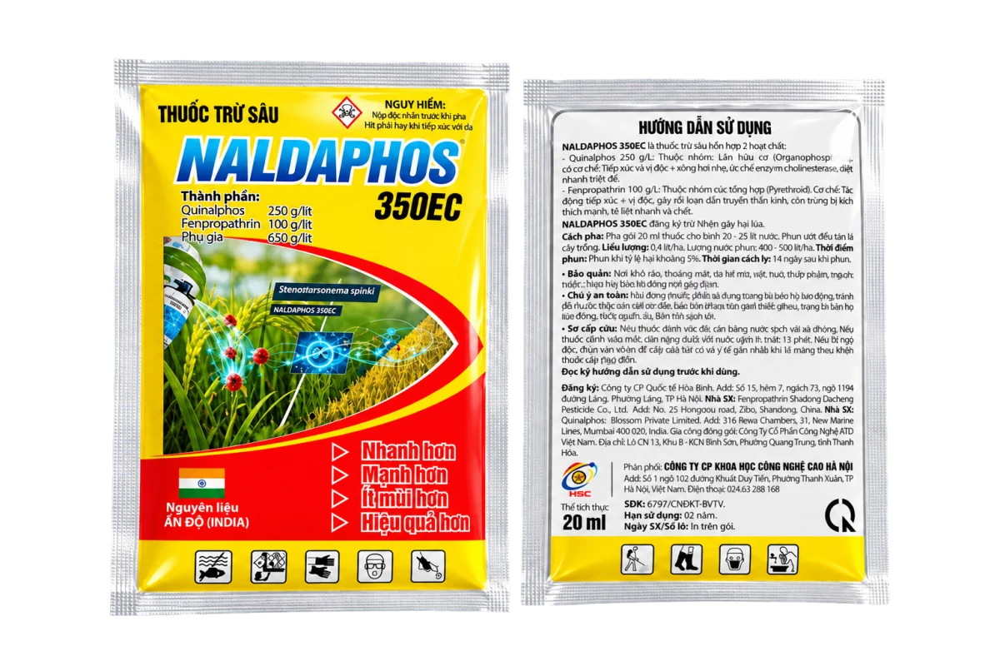

Bảo vệ mùa màng.
Nâng tầm giá trị.
HSC mang đến các giải pháp bảo vệ thực vật được chọn lọc, đồng hành cùng nhà nông trong từng mùa vụ.

Sản phẩm nổi bật
5 sản phẩm tiêu biểu của HSC. Xem danh mục đầy đủ để lựa chọn thêm.
Công ty Cổ phần Khoa học
Công nghệ Cao Hà Nội
Khởi đầu từ tâm huyết – Vững bước cùng nhà nông
Được thành lập ngày 08/04/2019, Công ty Cổ phần Khoa học Công nghệ Cao Hà Nội là một doanh nghiệp trẻ về tuổi đời, nhưng được xây dựng trên nền tảng kinh nghiệm, tri thức và tâm huyết đã được bồi đắp qua nhiều năm của những người sáng lập.
Đội ngũ của Công ty quy tụ các tiến sĩ, chuyên gia trong lĩnh vực hóa chất và bảo vệ thực vật, cùng các kỹ sư, cử nhân kinh tế giàu kinh nghiệm thực tiễn. Sự kết hợp giữa khoa học, kỹ thuật và tư duy kinh doanh giúp chúng tôi thấu hiểu từ chất lượng sản phẩm đến nhu cầu của thị trường, từ những trăn trở của đại lý đến khó khăn trên từng thửa ruộng của bà con nông dân.
Với phương châm “Lấy người nông dân làm gốc”, chúng tôi tin rằng sự phát triển bền vững của doanh nghiệp phải bắt đầu từ những giá trị thiết thực dành cho nhà nông. Mỗi sản phẩm được lựa chọn và phát triển không chỉ hướng đến hiệu quả, chất lượng và mức giá phù hợp, mà còn phải góp phần giúp bà con canh tác thuận lợi hơn, nâng cao giá trị nông sản và an tâm hơn trong mỗi mùa vụ.
Trên hành trình ấy, hệ thống đại lý trên khắp cả nước là những người bạn đồng hành quan trọng. Công ty luôn trân trọng sự tin tưởng của từng đối tác, nỗ lực xây dựng chính sách hợp tác minh bạch, hỗ trợ kịp thời và chăm sóc tận tâm. Chúng tôi không chỉ đưa sản phẩm đến thị trường, mà mong muốn cùng đại lý mang kiến thức, giải pháp và giá trị lâu dài đến gần hơn với người nông dân.
Chúng tôi hiểu rằng niềm tin không được tạo nên bởi những lời nói lớn lao, mà được vun đắp từ chất lượng của từng sản phẩm, trách nhiệm trong từng cam kết và sự tận tình trong từng lần phục vụ.
Từ nền tảng khoa học đến thực tiễn đồng ruộng, từ sự gắn kết với đại lý đến niềm tin của bà con — Công ty Cổ phần Khoa học Công nghệ Cao Hà Nội sẽ không ngừng đổi mới, hoàn thiện và đồng hành để góp phần xây dựng một nền nông nghiệp hiệu quả hơn, bền vững hơn và thịnh vượng hơn.
Chọn đúng giải pháp
cho mùa vụ của bạn
Để lại thông tin, đội ngũ HSC sẽ liên hệ tư vấn sản phẩm phù hợp.